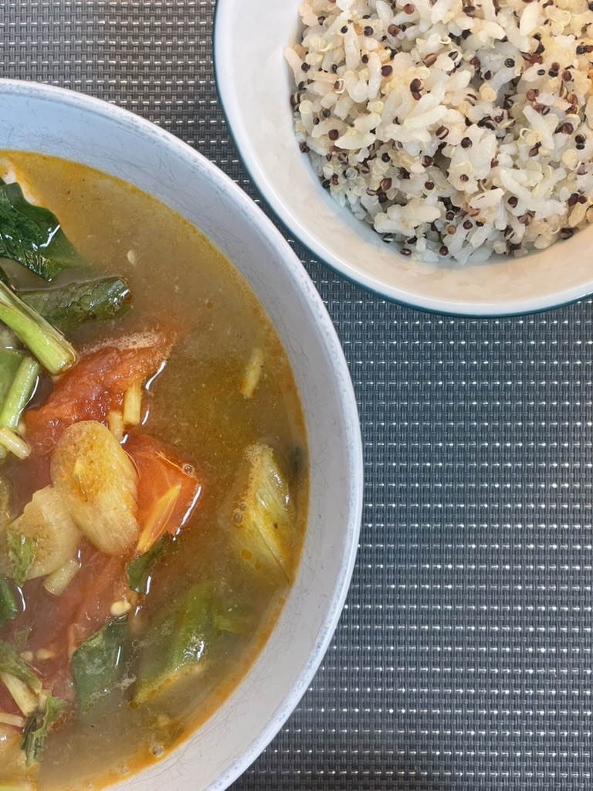

Canh Chua
Home

What is Canh Chua?
This soul warming soup was first intorduced to me 9 years ago by my then boyfriend, and current husband. He told me this sweet and sour soup was a dish of comort when growing up and it quickly became one of my favorite dishes to prepare. In hot or cold weather, the savory herb filled soup is a delight to taste and to smell. Each bite, especially when made with salmon, my fish of choice, can be complimented with a salty, garlicky, and spicy dipping sauce known as nuoc cham. Don't skip out on it!
What is in Canh Chua?
Below I have listed what is in the soup, ingredients for the nuoc cham, and a side of rice.
- Pineapple
- Tomato
- Elephant Ear
- Okra
- Thai Basil
- Culantro this is not a typo
- Fish of choice
- Enoki Mushroom
- Onion
- Fish Sauce
- Thai Chilies
- Lime
- Sugar
- Water
- Vinegar
- Garlic
- Rice
How do you make Canh Chua?
To make canh chua:
- Blend the pineapple and cut up all veggies.
- Descale fish and cut it into fillets.
- Add 8 cups of water, the pineapple, and fish sauce to the pot.
- Pre-boil, add the onion and tomato.
- Once the pot is boiling, add the rest of the veggies.
- Simmer for 10 minutes and then add the herbs in the last minute.
- Let it cool down to a comfortable temperature and enjoy!
To make nuoc cham:
- In a jar, mix together: 3 tbsp fish sauce, 3 tbsp sugar, 9 tbsp water, 1/2 tsp lime juice, 1/2 tsp vinegar, and 4 cloves of minced garlic.
- If you would like to make it spicy, add 1 diced thai chili to start and additional for more heat.
To make the side of rice:
- Use a rice cooker on the plain setting. OR Cook on the stove with usual rice cooking steps.
- To make the rice more nutrious, add 1/2 cup of quinoa or another fibrous grain.